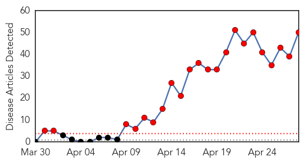
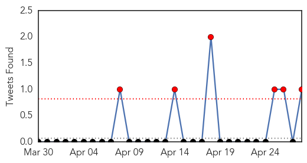

30 Day Trends
Web: 22 alerts, 0 warnings
Twitter: 9 alerts, 0 warnings
Top Articles:
- 1.000
- Saudis: More deaths from respiratory syndrome
- 1.000
- MERS-CoV: W.H.O. Risk Assessment
- 1.000
- Guardian Liberty Voice
- 1.000
- Health authorities in Saudi Arabia report 8 more MERS deaths - National
- 0.999
- Experts Watching MERS Outbreak for Global Menace
- 0.999
- 26 New Cases and 10 Deaths Over the Weekend
- 0.999
- MERS-CoV outbreak: infectious disease genomics in action
- 0.999
- MERS Cases Spike As Virus Makes First Appearance In Egypt
- 0.999
- MERS cases spike to 339 in Saudi Arabia
- 0.999
- WHO provides Middle East respiratory syndrome coronavirus update
- 0.999
- Killer Flu Bug Claims More Victims
- 0.998
- Mers: Don’t believe rumours, but maintain hygieneHealthcare
- 0.998
- The MERS Virus Epidemic Is Just Waiting To Happen, And There’s No Cure
- 0.997
- Experts cast doubt on Saudi push for Middle East virus vaccine
- 0.997
- Infected Saudi Arabia Traveler Spreads MERS Virus to Egypt
- 0.997
- Middle East Online
- 0.997
- Lethal camel-borne MERS virus death toll reaches 102 in Saudi Arabia
- 0.997
- 8 More Deaths From MERS In Saudi Arabia
- 0.997
- Egypt Reports First Case Of MERS Virus
- 0.997
- Experts cast doubt on Saudi push for Middle East virus vaccine
- 0.997
- Saudi Arabia reports eight more MERS deaths
- 0.997
- Experts cast doubt on Saudi push for Middle East virus vaccine
- 0.996
- Saudi MERS deaths top 100, fueling public fear
- 0.995
- Saudi Mers toll tops 100 with eight more deaths
- 0.995
- Saudi Mers death toll passes 100
- 0.994
- Saudi Mers Death Toll Passes 100
- 0.993
- MERS cases keep rising, but no change in virus seen
- 0.993
- Saudi Sets Up Expert Panel To Contain MERS Virus
- 0.992
- Seven Cases of MERS-CoV are Reported to WHO
- 0.992
- Health Minister affirms Bahrain free of Coronavirus disease
- 0.992
- 10 more die in Saudi Arabia, 16 new MERS cases reported
- 0.990
- Should we be worried about the MERS virus?
- 0.988
- The high cost of secrecy in Saudi Arabia
- 0.987
- Saudi MERS deaths top 100 fuelling public fear
- 0.981
- Saudi government sets up board to contain Mers
- 0.980
- Saudi Arabia Contagion Effect: MERS
- 0.978
- Two antibodies show promise blocking MERS virus
- 0.976
- Saudi reports five new MERS deaths, taking toll to 92
- 0.971
- OFWs monitored for Corona Virus
- 0.968
- Health department declares Central Visayas free of MERS-CoV
- 0.958
- Egypt takes preventive measures against coronavirus
- 0.952
- Saudi government set-up board of specialists to contain Corona virusHealthcare
- 0.944
- Saudi schools on alert after Mers cases shoot up
- 0.926
- Suspects negative from MERS-COV
- 0.911
- Egypt denies new coronavirus cases
- 0.881
- No provision under Medical Act to allow specialists to amputate limbs
- 0.878
- Abu Dhabi health authority launches Mers coronavirus awareness campaign
- 0.870
- Top of the Morning: Middle East Respiratory Syndrome on the Rise
- 0.858
- Expats guard against coronavirus
- 0.833
- Saudi schools on alert after ‘Mers’
Showing top 50 articles...
Top Tweets:
- 0.520
- RT: PNAS: Identification of human neutralizing antibodies against MERS-CoV and their role in virus adaptive evolution http:…
Web/News Articles
Tweets
Article Locations